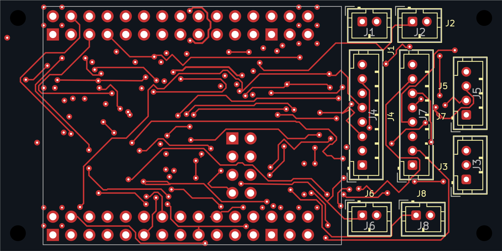
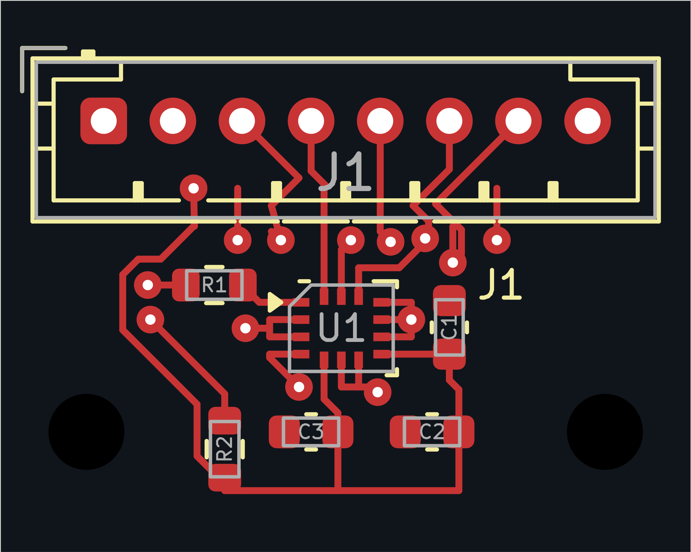
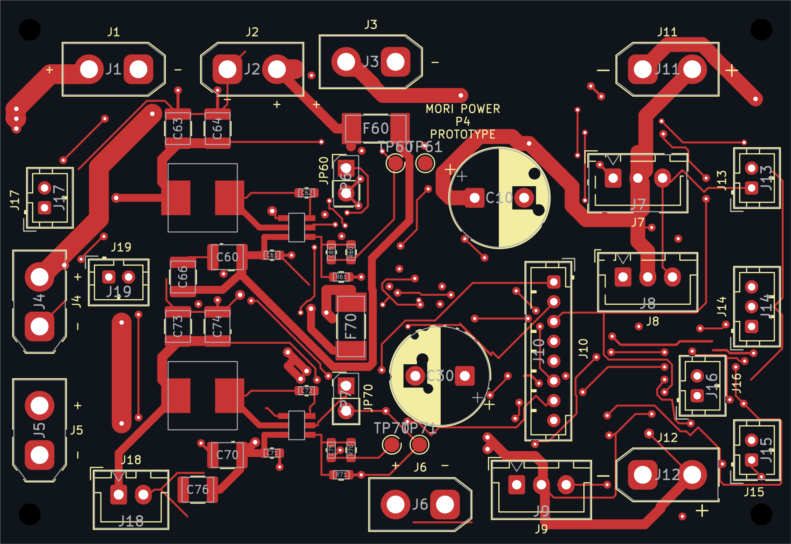
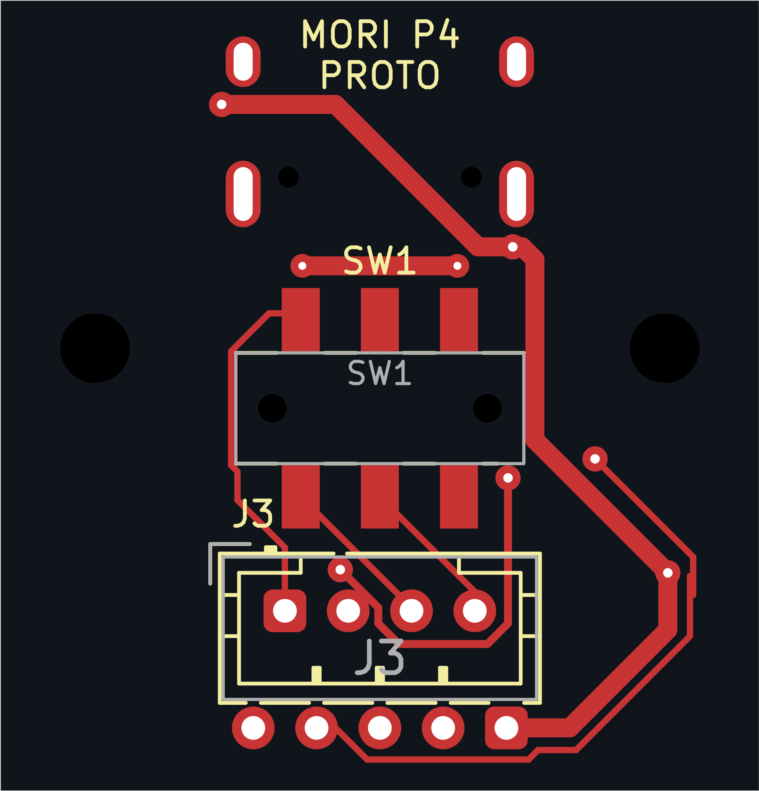

运动板 · 70×35 / 4层 mm
原理图PDFKiCad工程B面视图为背面观察，镜像；针序以原生焊盘编号和线束表为准。

PROTOTYPE · KiCad 10.0.6 · 实机NOT_TESTED。视图来自实际原生工程，铜层与Fab外形不是示意重画。
后板24×25需要机械适配；器件本体下方引出例外、架空模块和对面层投影见逐项走线审查。零DRC不等于47条源规则全部通过。
B面视图为背面观察，镜像；针序以原生焊盘编号和线束表为准。

B面视图为背面观察，镜像；针序以原生焊盘编号和线束表为准。

B面视图为背面观察，镜像；针序以原生焊盘编号和线束表为准。

B面视图为背面观察，镜像；针序以原生焊盘编号和线束表为准。
